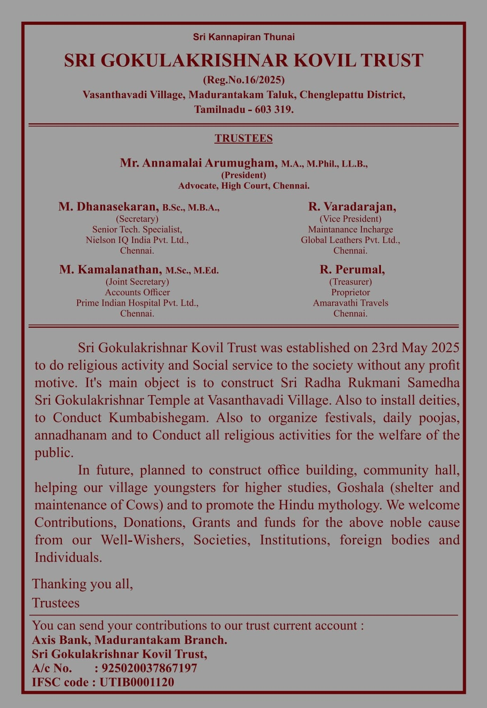
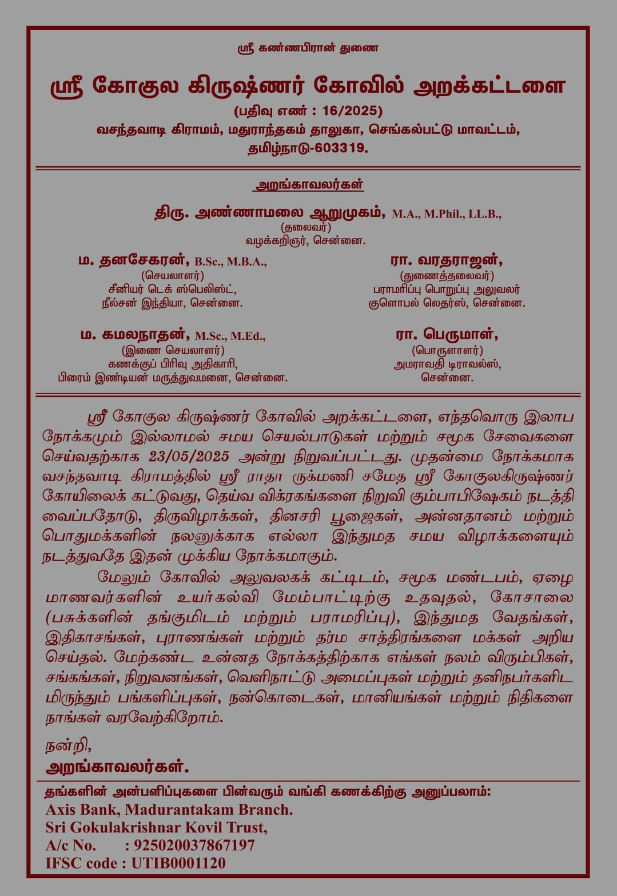
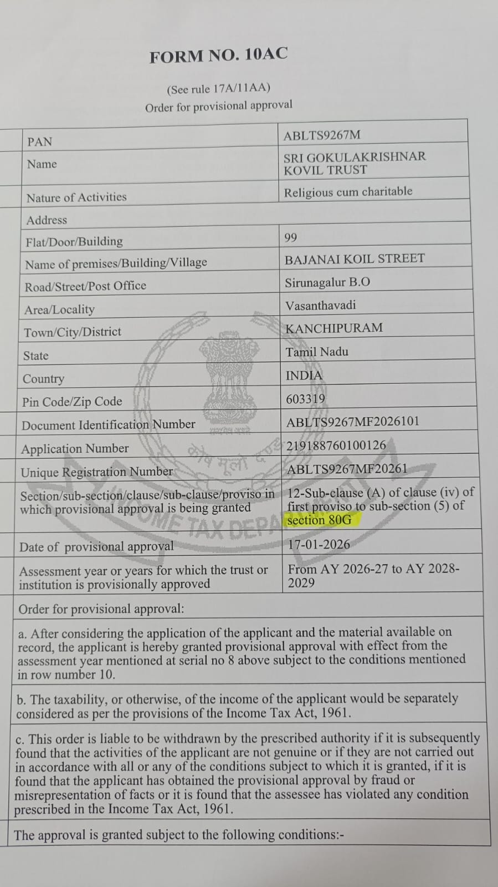
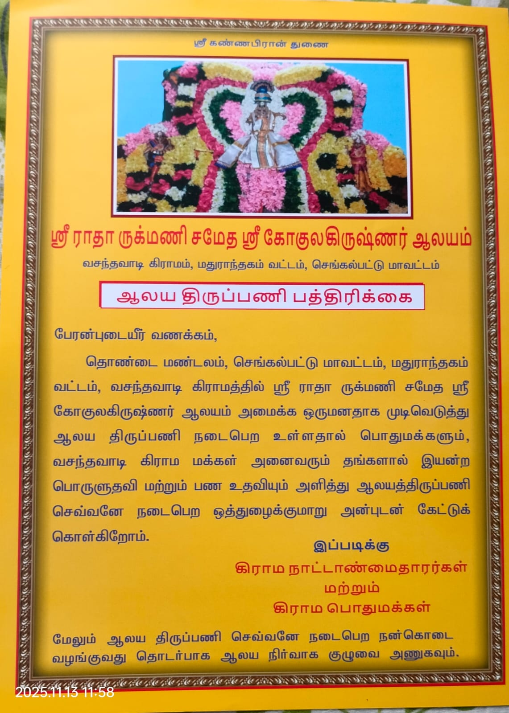
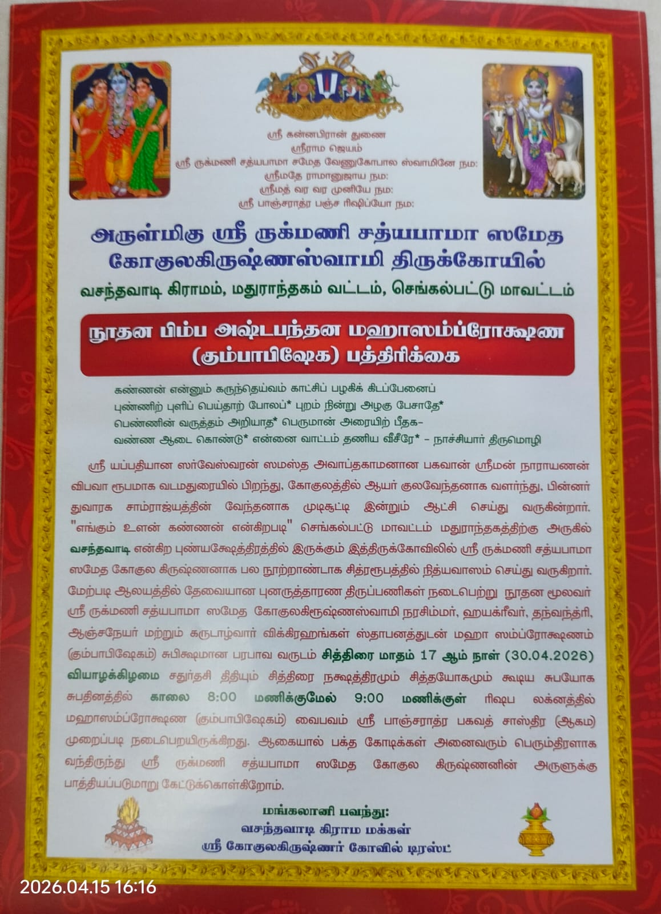
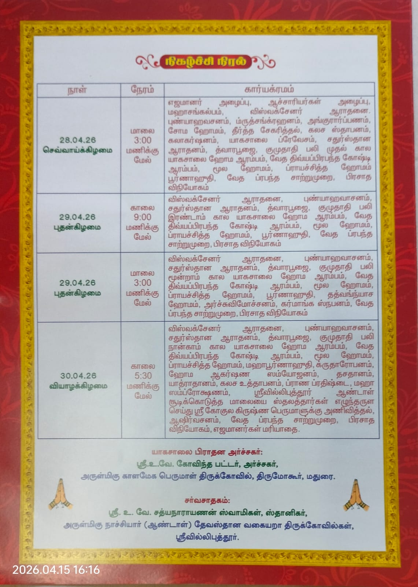

Mr. Annamalai Arumugham
President
Reg. No. 16/2025 • Established 23 May 2025
|| हरे कृष्ण हरे कृष्ण कृष्ण कृष्ण हरे हरे ||
Vasanthavadi Village, Madurantakam Taluk, Chengalpattu District, Tamil Nadu - 603319
🛕 Maha Kumbabhishekam — 30 April 2026
A charitable and religious trust committed to temple reconstruction, daily poojas, annadhanam, and community welfare. Your seva helps us reach Kumbabishekam.
About The Trust
Sri Gokulakrishnar Kovil Trust was established on 23 May 2025 to promote religious activities and social service without profit motive.
Our primary mission is to rebuild Sri Radha Rukmani Samedha Sri Gokulakrishnar Temple at Vasanthavadi village. The old shrine has been demolished, the inauguration has been performed, and construction is currently under way.
Once completed, the temple will host kumbabishekam, festivals, daily poojas and annadhanam. Future plans include a village support ecosystem with office facilities, community hall, youth empowerment initiatives, and goshalai (cow shelter) care activities.
அறக்கட்டளை பற்றி
ஸ்ரீ கோகுல கிருஷ்ணர் கோவில் அறக்கட்டளை 23 மே 2025 அன்று சமூக மற்றும் ஆன்மிக சேவைக்காக தொடங்கப்பட்டது.
வசந்தவாடி கிராமத்தில் ஸ்ரீ ராதா ருக்மணி சமேத ஸ்ரீ கோகுலகிருஷ்ணர் திருக்கோவில் அமைத்தல், கும்பாபிஷேகம், அன்னதானம், நித்ய பூஜைகள் நடத்துதல் முக்கிய நோக்கம் ஆகும்.
From Old Shrine to New Beginnings
The old temple has been demolished, the inauguration has been performed, and construction of the new temple is currently in progress.
Before — Old Temple & Demolition
Now — Inauguration
Sacred Ceremony
Glimpses of the inauguration ceremony — the sacred rites marking the reconstruction of the temple, performed by Vedic priests in the presence of devotees.
Watch the Ceremony
Relive the sacred moments of the inauguration and the demolition of the old shrine.
What We Do
Our Leadership
President
Secretary
Vice President
Joint Secretary
Treasurer
Support the Seva
Donations, grants and sponsorships are welcome for the ongoing temple construction and future service activities. Every contribution brings us closer to Kumbabishekam.
Scan & Pay
Place your UPI QR image atassets/qr/payment-qr.jpg
UPI • GPay • PhonePe • Paytm
Bank Transfer Details
Donations eligible for tax exemption under Section 80G of Income Tax Act.
Official Records
Attached source images and certificates.




Reach Us
Address
Sri Gokulakrishnar Kovil Trust
Vasanthavadi Village, Madurantakam Taluk,
Chengalpattu District, Tamil Nadu - 603319
Trust Registration
Reg. No. 16/2025
Established: 23 May 2025
Sacred Chant
Hare Krishna Hare Krishna
Krishna Krishna Hare Hare
Hare Rama Hare Rama
Rama Rama Hare Hare
Main Ceremony
30
APRIL 2026
Thursday • வியாழக்கிழமை
🕘 9:30 AM & 5:55 PM
Countdown
🕉️ Nootana Bimba Ashtabandhana Maha Kumbabhishekam
நூதன பிம்ப அஷ்டபந்தன மஹா கும்பாபிஷேகம்
📍 Venue
Sri Rukmani Sathyabhama Samedha Gokulakrishna Swamy Temple
Vasanthavadi Village, Madurantakam Taluk, Chengalpattu District
🕉️ Officiating Priests
Sri M. Govinda Bhattar, Archakar — Arulmigu Kalyana Perumal Thirukkoyil, Thiruppachur, Madurai
Sri U. Ve. Sathya Thennai Swamigal, Sridhari — Arulmigu Andal Temple, Poonamallee


🙏 அனைவரும் வருகை தந்து பெருமாளின் அருளைப் பெற வேண்டுகிறோம் 🙏
All devotees are cordially invited to receive the blessings of the Lord.